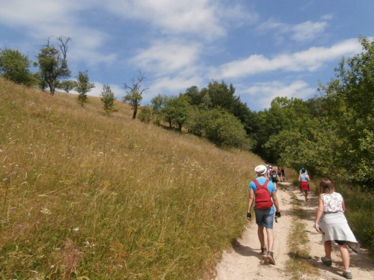

10 lucruri făcute pentru prima dată în campul de vară

I-am propus Teodorei, cel mai tânăr membru al centrului nostru local, să ne împărtăşească impresiile ei despre primul camp de vară la care a avut ocazia să participe. Iată ce a ieşit…
A fost frumos primul meu camp de vară. Ar fi fost și mai frumos dacă puteam să facem toate atelierele și să facem mai multe hike-uri. În afară de acestea, mi-a plăcut suuuuuuper mult! Mâncarea a fost bună (prea mult porumb cu ton; RECOLUȚIE!!! REVOLUȚIE!!!) și programul a fost interesant! Sper să citim jurnalele de camp la următoarea întâlnire din toamnă! Va fi foarte distractiv! 🙂
Abia aștept următorul Camp, sper cu mai multe activități și cu mai puțină leneveală!:) Și sperăm ca unchiul lui GMK să vina și el cu noi :D. Mă bucur că am “experimentat” lucruri noi, cum ar fi cele 10 de mai jos (erau 11, dar pe al 11-lea l-am uitat…)
Am rămas cu nişte amintiri frumoase și amuzante!
10 lucruri noi experimentate în acest camp de vară (ordine aleatorie):
- Mâncat pentru prima dată bezele la foc
- Stat la foc cu nebunii…
- Rezistat hike-urilor
- Mers şi implicat cot la cot cu restul
- Băut sirop de brad
- Mâncat pentru prima dată fragi
- Mâncat pentru prima dată mure
- Alergat sistematic lumea cu toporul (partea mea preferată… :D)
- Făcut baie în râu
- Tras cu arcul
Teodora Barbu